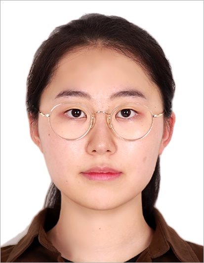
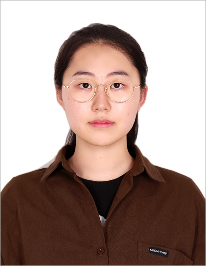

My Projects
A selection of my range of projects
Game Designer

A clear direction of the game concept and well-matched details make the game more refined and complete. I explore concepts by listing potential elements and evaluating their impact on gameplay, selecting those that best support the core idea. I enhance immersion through detail and arrange elements so that both the system and the concept are clearly conveyed.
I consider all information presented to the player, focusing on how controls and objectives are understood. I design environments that help players naturally grasp gameplay and intent.
A well-divided and easy-to-understand structure allows the intended game design to be clearly realized. Based on this, I focus on sufficiently decomposing systems into clearly defined components. I organize functionality and structure to ensure the intended game design is implemented smoothly.
Student Game Designmer
A DigiPen Game Engineering student at Keimyung University. Primarily works with C++.
Completed coursework in game engine development and memory management, and participates in team-based game development projects. Experience includes roles as Design Lead and Art Lead in team projects.

A selection of my range of projects
No formal work experience yet
Sound Effects, Course Project 1
Sep 2023 - Dec 2023
Daegu, Korea
Developed a 2D shooting game "He was a" as part of a 3-person team.
Contributed to early-stage brainstorming and managed game sound effects.
Also participated in UI editing.
Design Lead, Course Project 2 Mar 2025 - Jun 2025 Daegu, Korea Developed a turn-based action puzzle game "10 9 8.." as part of a 4-person team. Designed game objects based on a chess concept. Led the overall game art direction and visual atmosphere.
Art Lead, Course Project 3 Sep 2025 - Present Daegu, Korea Currently developing a construction simulation game "IGY" as part of a 5-person team. Creating pixel-based buildings and character assets. Refining visual elements to clearly convey the game’s purpose and direction.
Took a leading role in refining and developing initial ideas
during the early design phase of the course project "He was a".
In "10 9 8..", provided concept art idea sketches during the game object selection process, aligned with the intended atmosphere.
Keimyung University Digipen Game Engineering , In Progress Mar 2023 - Present Daegu, Korea